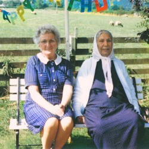

[ 316 ] Dauwd - Theory Of Colours
+ + +
This was a really nice album to start this journey with,
It evokes some similar feelings of early
Jan Jelinek / Farben records.
Most of the songs are unforgettably swung,
Full of pittering hi-hats and filters,
modulated with LFO's synced to the off beat.
This style ( washy envelopy rusty and blanketting ),
Is quite hard to get just right.
The balance of warm melodic elements
With repeating, undulating, metallic scrapes
Feels quite nice on the ears.
This is my first real attentive listen
To any of Dauwd's discography - surely
they are on my list to follow closely now.